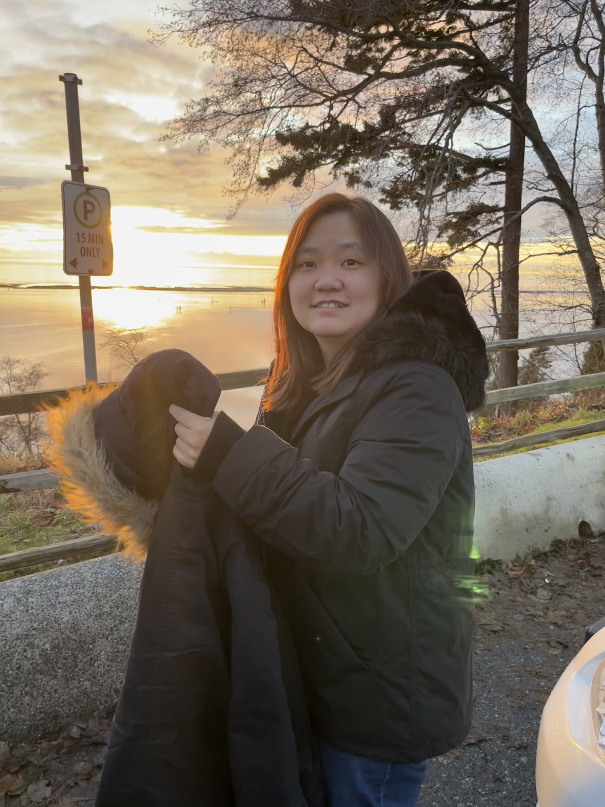

EXPERIMENT 01
Static obstacle avoidance
Avoiding obstacles along the planned trajectory.
ROBOTICS · AUTONOMOUS VEHICLES · SAFETY · LEARNING-BASED CONTROL
PhD Candidate & Graduate Research Assistant
Mechanical & Aerospace Engineering · The Ohio State University
My work focuses on robotics and autonomous vehicles, with an emphasis on safety, testing, verification, and validation. I connect safety-critical control with system integration and experimental evaluation on real vehicles, and extend it to learning-based control: reinforcement learning (PPO, SAC) trained in CARLA and dSPACE and deployed zero-shot on a test vehicle, and world models that learn dynamics from pixels.
Seeking full-time roles in robotics, autonomous vehicles, safety, and verification & validation. Open to relocation.

IN THE FIELD
From MPC-CBF safety filters to reinforcement-learning policies: implemented, integrated, and evaluated in simulation and on full-scale test vehicles.
Comparing MPC-DC, MPC-CBF-QP, and MPC-CBF across three driving scenarios.
EXPERIMENT 01
Avoiding obstacles along the planned trajectory.
EXPERIMENT 02
Responding to a pedestrian entering the vehicle’s path.
EXPERIMENT 03
Evaluating controller behavior during an overtaking maneuver.
Safety filters that account for sensing and localization uncertainty, validated in pedestrian-interaction tests.
CVaR-CBF · VEHICLE TEST
Waypoint following, CVaR-CBF avoidance, and return to the reference path.
MPC + CBF-QP · VEHICLE TEST
Onboard and external views from the full-scale sudden-pedestrian test.
REAL-TIME MONITORING
Vehicle position, prediction, and obstacle radius during the pedestrian scenario.
Path-following policies trained entirely in simulation (CARLA, dSPACE) and deployed zero-shot on the full-scale test vehicle, with no real-world fine-tuning.
SIMULATION · CARLA
Policy training on a winding path in CARLA.
SIMULATION · dSPACE
Policy training in the dSPACE vehicle simulation environment.
PPO · VEHICLE TEST
Simulation-trained policy deployed zero-shot: S-path following with live trajectory and speed monitoring.
SAC · VEHICLE TEST
The same S-path run with the SAC-based controller, also deployed zero-shot.
TOY EXAMPLE · OPEN SOURCE
A small JEPA-style world model inspired by LeWorldModel learns from 64×64 images and torque, predicting the next latent state with a SIGReg regularizer. Physical state is never used as a training target; probes check what the latent space recovered.
Moving from a single frame to a five-frame history raised the angular-velocity probe R² from −1.45 to 0.997 in exploratory runs. The clip shows original frames (left) and decoder reconstructions (right).
Vehicle experiments are collaborative research with Vishnu Renganathan and Qadeer Ahmed at OSU CAR / MSL.
Tests conducted in a controlled environment. Videos are sped up for visualization; vehicle speeds are reported in the paper.
BACKGROUND
May — Aug 2025
Systems Engineering Intern
Developed safety metrics to identify safety-critical events and potential collisions, supporting the evaluation and validation of autonomous driving systems.
PhD Candidate · Graduate Research Assistant
Develop safety-critical collision avoidance controllers using MPC and CBF, with simulation and real-vehicle testing to evaluate autonomous driving behavior. Integrate PPO for learning-augmented control.
Systems Engineer
Led integration and interface design for coordinated operations across 20 autonomous UAVs. Worked on communication protocols, ground control system redundancy, and system verification.
May 2018 — Jul 2019
Team Leader, Manufacturing Section
Led 15 operators in round-the-clock semiconductor manufacturing operations. Improved tool productivity by 30% through production coordination, cleanroom automated guided vehicle (AGV) systems, and automated measurement data system improvements.
SELECTED RESEARCH · 2024–2026 PUBLICATIONS
U.S. Department of Transportation–funded research
My research within CARMEN+ develops Control Barrier Function (CBF)-based safety assurance for connected and autonomous vehicles. A continuous research effort connects cooperative collision avoidance, real-vehicle implementation, risk-aware control, and trajectory safety certification.
Cooperative driving · Real-vehicle experiments · Risk-aware control · Safety certification
01 / IMPLEMENTATION
CBF-based collision avoidance connects cooperative driving research with the implementation and experimental comparison of three MPC-based safety architectures.
Intersections and merging in simulation; static obstacles, pedestrians, and overtaking on a real vehicle.
02 / RISK AND UNCERTAINTY
Probabilistic sensing and CVaR extend safety filtering to uncertain environments. Risk-budgeted intervention adapts controller conservatism as safety conditions change.
Multi-modal sensing, full-scale vehicle evaluation, and 1,500 Monte Carlo trials of risk-budgeted control.
03 / EVALUATION AND CERTIFICATION
Barrier-based evaluation extends to trajectories produced by an independent planner, combining risk-aware margins with conformal calibration.
150 held-out nuPlan sessions; nonnegative safety-clearance certificate availability increased from 68.7% to 87.3%.
Explore the problems, methods, experiments, and results behind this continuing research effort.
Explore the CARMEN+ research →Supported by the CARMEN+ University Transportation Center, sponsored by the U.S. Department of Transportation under Grant No. 69A3552348327. The views presented are those of the authors and do not necessarily represent the official views of the U.S. Department of Transportation.
PUBLICATIONS
2026
2026
Control Engineering Practice (CEP) · 2026
2026
2026 American Control Conference (ACC)
2025
2024
IEEE International Conference on Intelligent Transportation Systems (ITSC)
EXPERTISE
LET’S CONNECT
I’m interested in opportunities in robotics and autonomous vehicles, including safety, testing, verification, and validation.
chang.2314@osu.edu ↗